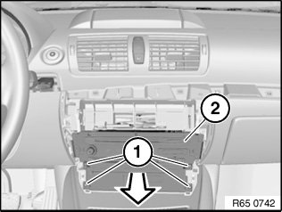

65 83 020 Removing and Installing (Replacing) Car Information Computer (CIC)
65 83 020 Removing And Installing (Replacing) Car Information Computer (CIC)

IMPORTANT: Risk of damage.
A hard disk is installed in the Car Information Computer (CIC).
Carry out mechanical work on the CIC and adjacent components with care.
Avoid subjecting the CIC to vibration/shocks.

IMPORTANT: Read and comply with notes on protection against electrostatic damage (ESD protection).

NOTE: Comply with notes and instructions on handling optical fibres.

Necessary preliminary work:
- Disconnect battery earth lead
- Remove middle trim for instrument panel

Release screws (1).
Pull back Car Infotainment Computer (2) a little and disconnect associated plug connection.
Remove Car Infotainment Computer (2).

Replacement:
Carry out programming/encoding.